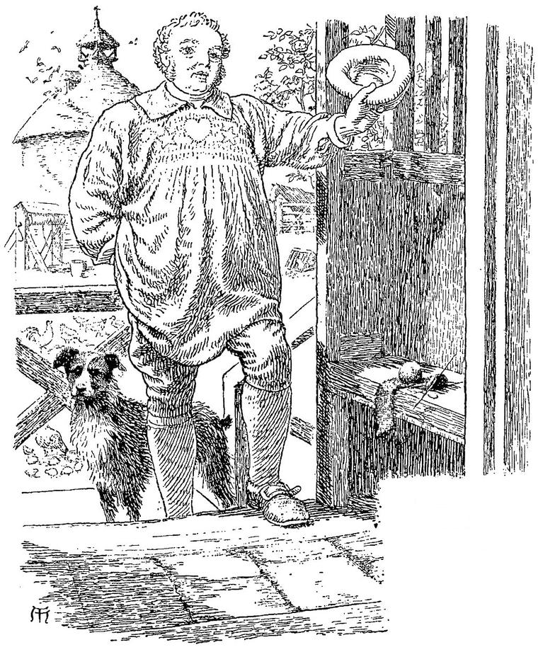
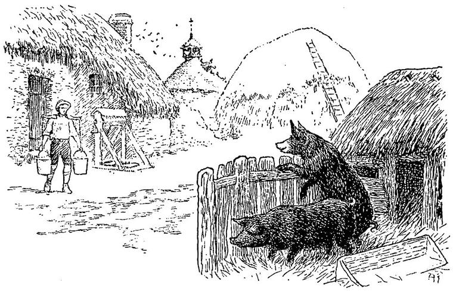

A little I am hurt, but yett not slaine;
I’le but lye downe and bleede awhile,
And then I’le rise and fight againe.”
BALLAD of Sir Andrew Barton.
But I could not remain where I was any longer, though the daylight was hateful to me, and the thought of the great, innocent, bold sunrise unendurable. Here there was no well to cool my face, smarting with the bitterness of my own tears. Nor would I have washed in the well of that grotto, had it flowed clear as the rivers of Paradise. I rose, and feebly left the sepulchral cave. I took my way I knew not whither, but still towards the sunrise. The birds were singing; but not for me. All the creatures spoke a language of their own, with which I had nothing to do, and to which I cared not to find the key any more.
I walked listlessly along. What distressed me most—more even than my own folly—was the perplexing question, How can beauty and ugliness dwell so near? Even with her altered complexion and her face of dislike; disenchanted of the belief that clung around her; known for a living, walking sepulchre, faithless, deluding, traitorous; I felt notwithstanding all this, that she was beautiful. Upon this I pondered with undiminished perplexity, though not without some gain. Then I began to make surmises as to the mode of my deliverance; and concluded that some hero, wandering in search of adventure, had heard how the forest was infested; and, knowing it was useless to attack the evil thing in person, had assailed with his battle-axe the body in which he dwelt, and on which he was dependent for his power of mischief in the wood. “Very likely,” I thought, “the repentant-knight, who warned me of the evil which has befallen me, was busy retrieving his lost honour, while I was sinking into the same sorrow with himself; and, hearing of the dangerous and mysterious being, arrived at his tree in time to save me from being dragged to its roots, and buried like carrion, to nourish him for yet deeper insatiableness.” I found afterwards that my conjecture was correct. I wondered how he had fared when his blows recalled the Ash himself, and that too I learned afterwards.
I walked on the whole day, with intervals of rest, but without food; for I could not have eaten, had any been offered me; till, in the afternoon, I seemed to approach the outskirts of the forest, and at length arrived at a farm-house. An unspeakable joy arose in my heart at beholding an abode of human beings once more, and I hastened up to the door, and knocked. A kind-looking, matronly woman, still handsome, made her appearance; who, as soon as she saw me, said kindly, “Ah, my poor boy, you have come from the wood! Were you in it last night?”
I should have ill endured, the day before, to be called boy; but now the motherly kindness of the word went to my heart; and, like a boy indeed, I burst into tears. She soothed me right gently; and, leading me into a room, made me lie down on a settle, while she went to find me some refreshment. She soon returned with food, but I could not eat. She almost compelled me to swallow some wine, when I revived sufficiently to be able to answer some of her questions. I told her the whole story.
“It is just as I feared,” she said; “but you are now for the night beyond the reach of any of these dreadful creatures. It is no wonder they could delude a child like you. But I must beg you, when my husband comes in, not to say a word about these things; for he thinks me even half crazy for believing anything of the sort. But I must believe my senses, as he cannot believe beyond his, which give him no intimations of this kind. I think he could spend the whole of Midsummer-eve in the wood and come back with the report that he saw nothing worse than himself. Indeed, good man, he would hardly find anything better than himself, if he had seven more senses given him.”
“But tell me how it is that she could be so beautiful without any heart at all—without any place even for a heart to live in.”
“I cannot quite tell,” she said; “but I am sure she would not look so beautiful if she did not take means to make herself look more beautiful than she is. And then, you know, you began by being in love with her before you saw her beauty, mistaking her for the lady of the marble—another kind altogether, I should think. But the chief thing that makes her beautiful is this: that, although she loves no man, she loves the love of any man; and when she finds one in her power, her desire to bewitch him and gain his love (not for the sake of his love either, but that she may be conscious anew of her own beauty, through the admiration he manifests), makes her very lovely—with a self-destructive beauty, though; for it is that which is constantly wearing her away within, till, at last, the decay will reach her face, and her whole front, when all the lovely mask of nothing will fall to pieces, and she be vanished for ever. So a wise man, whom she met in the wood some years ago, and who, I think, for all his wisdom, fared no better than you, told me, when, like you, he spent the next night here, and recounted to me his adventures.”
I thanked her very warmly for her solution, though it was but partial; wondering much that in her, as in the woman I met on my first entering the forest, there should be such superiority to her apparent condition. Here she left me to take some rest; though, indeed, I was too much agitated to rest in any other way than by simply ceasing to move.
In half an hour, I heard a heavy step approach and enter the house. A jolly voice, whose slight huskiness appeared to proceed from overmuch laughter, called out “Betsy, the pigs’ trough is quite empty, and that is a pity. Let them swill, lass! They’re of no use but to get fat. Ha! ha! ha! Gluttony is not forbidden in their commandments. Ha! ha! ha!” The very voice, kind and jovial, seemed to disrobe the room of the strange look which all new places wear—to disenchant it out of the realm of the ideal into that of the actual. It began to look as if I had known every corner of it for twenty years; and when, soon after, the dame came and fetched me to partake of their early supper, the grasp of his great hand, and the harvest-moon of his benevolent face, which was needed to light up the rotundity of the globe beneath it, produced such a reaction in me, that, for a moment, I could hardly believe that there was a Fairy Land; and that all I had passed through since I left home, had not been the wandering dream of a diseased imagination, operating on a too mobile frame, not merely causing me indeed to travel, but peopling for me with vague phantoms the regions through which my actual steps had led me. But the next moment my eye fell upon a little girl who was sitting in the chimney-corner, with a little book open on her knee, from which she had apparently just looked up to fix great inquiring eyes upon me. I believed in Fairy Land again. She went on with her reading, as soon as she saw that I observed her looking at me. I went near, and peeping over her shoulder, saw that she was reading The History of Graciosa and Percinet.

“Very improving book, sir,” remarked the old farmer, with a good-humoured laugh. “We are in the very hottest corner of Fairy Land here. Ha! ha! Stormy night, last night, sir.”
“Was it, indeed?” I rejoined. “It was not so with me. A lovelier night I never saw.”
“Indeed! Where were you last night?”
“I spent it in the forest. I had lost my way.”
“Ah! then, perhaps, you will be able to convince my good woman, that there is nothing very remarkable about the forest; for, to tell the truth, it bears but a bad name in these parts. I dare say you saw nothing worse than yourself there?”
“I hope I did,” was my inward reply; but, for an audible one, I contented myself with saying, “Why, I certainly did see some appearances I could hardly account for; but that is nothing to be wondered at in an unknown wild forest, and with the uncertain light of the moon alone to go by.”
“Very true! you speak like a sensible man, sir. We have but few sensible folks round about us. Now, you would hardly credit it, but my wife believes every fairy-tale that ever was written. I cannot account for it. She is a most sensible woman in everything else.”
“But should not that make you treat her belief with something of respect, though you cannot share in it yourself?”
“Yes, that is all very well in theory; but when you come to live every day in the midst of absurdity, it is far less easy to behave respectfully to it. Why, my wife actually believes the story of the ‘White Cat.’ You know it, I dare say.”
“I read all these tales when a child, and know that one especially well.”
“But, father,” interposed the little girl in the chimney-corner, “you know quite well that mother is descended from that very princess who was changed by the wicked fairy into a white cat. Mother has told me so a many times, and you ought to believe everything she says.”
“I can easily believe that,” rejoined the farmer, with another fit of laughter; “for, the other night, a mouse came gnawing and scratching beneath the floor, and would not let us go to sleep. Your mother sprang out of bed, and going as near it as she could, mewed so infernally like a great cat, that the noise ceased instantly. I believe the poor mouse died of the fright, for we have never heard it again. Ha! ha! ha!”
The son, an ill-looking youth, who had entered during the conversation, joined in his father’s laugh; but his laugh was very different from the old man’s: it was polluted with a sneer. I watched him, and saw that, as soon as it was over, he looked scared, as if he dreaded some evil consequences to follow his presumption. The woman stood near, waiting till we should seat ourselves at the table, and listening to it all with an amused air, which had something in it of the look with which one listens to the sententious remarks of a pompous child. We sat down to supper, and I ate heartily. My bygone distresses began already to look far off.
“In what direction are you going?” asked the old man.
“Eastward,” I replied; nor could I have given a more definite answer. “Does the forest extend much further in that direction?”
“Oh! for miles and miles; I do not know how far. For although I have lived on the borders of it all my life, I have been too busy to make journeys of discovery into it. Nor do I see what I could discover. It is only trees and trees, till one is sick of them. By the way, if you follow the eastward track from here, you will pass close to what the children say is the very house of the ogre that Hop-o’-my-Thumb visited, and ate his little daughters with the crowns of gold.”
“Oh, father! ate his little daughters! No; he only changed their gold crowns for nightcaps; and the great long-toothed ogre killed them in mistake; but I do not think even he ate them, for you know they were his own little ogresses.”
“Well, well, child; you know all about it a great deal better than I do. However, the house has, of course, in such a foolish neighbourhood as this, a bad enough name; and I must confess there is a woman living in it, with teeth long enough, and white enough too, for the lineal descendant of the greatest ogre that ever was made. I think you had better not go near her.”
In such talk as this the night wore on. When supper was finished, which lasted some time, my hostess conducted me to my chamber.
“If you had not had enough of it already,” she said, “I would have put you in another room, which looks towards the forest; and where you would most likely have seen something more of its inhabitants. For they frequently pass the window, and even enter the room sometimes. Strange creatures spend whole nights in it, at certain seasons of the year. I am used to it, and do not mind it. No more does my little girl, who sleeps in it always. But this room looks southward towards the open country, and they never show themselves here; at least I never saw any.”
I was somewhat sorry not to gather any experience that I might have, of the inhabitants of Fairy Land; but the effect of the farmer’s company, and of my own later adventures, was such, that I chose rather an undisturbed night in my more human quarters; which, with their clean white curtains and white linen, were very inviting to my weariness.
In the morning I awoke refreshed, after a profound and dreamless sleep. The sun was high, when I looked out of the window, shining over a wide, undulating, cultivated country. Various garden-vegetables were growing beneath my window. Everything was radiant with clear sunlight. The dew-drops were sparkling their busiest; the cows in a near-by field were eating as if they had not been at it all day yesterday; the maids were singing at their work as they passed to and fro between the out-houses: I did not believe in Fairy Land. I went down, and found the family already at breakfast. But before I entered the room where they sat, the little girl came to me, and looked up in my face, as though she wanted to say something to me. I stooped towards her; she put her arms round my neck, and her mouth to my ear, and whispered—

“A white lady has been flitting about the house all night.”
“No whispering behind doors!” cried the farmer; and we entered together. “Well, how have you slept? No bogies, eh?”
“Not one, thank you; I slept uncommonly well.”
“I am glad to hear it. Come and breakfast.”
After breakfast, the farmer and his son went out; and I was left alone with the mother and daughter.
“When I looked out of the window this morning,” I said, “I felt almost certain that Fairy Land was all a delusion of my brain; but whenever I come near you or your little daughter, I feel differently. Yet I could persuade myself, after my last adventures, to go back, and have nothing more to do with such strange beings.”
“How will you go back?” said the woman.
“Nay, that I do not know.”
“Because I have heard, that, for those who enter Fairy Land, there is no way of going back. They must go on, and go through it. How, I do not in the least know.”
“That is quite the impression on my own mind. Something compels me to go on, as if my only path was onward, but I feel less inclined this morning to continue my adventures.”
“Will you come and see my little child’s room? She sleeps in the one I told you of, looking towards the forest.”
“Willingly,” I said.
So we went together, the little girl running before to open the door for us. It was a large room, full of old-fashioned furniture, that seemed to have once belonged to some great house.
The window was built with a low arch, and filled with lozenge-shaped panes. The wall was very thick, and built of solid stone. I could see that part of the house had been erected against the remains of some old castle or abbey, or other great building; the fallen stones of which had probably served to complete it. But as soon as I looked out of the window, a gush of wonderment and longing flowed over my soul like the tide of a great sea. Fairy Land lay before me, and drew me towards it with an irresistible attraction. The trees bathed their great heads in the waves of the morning, while their roots were planted deep in gloom; save where on the borders the sunshine broke against their stems, or swept in long streams through their avenues, washing with brighter hue all the leaves over which it flowed; revealing the rich brown of the decayed leaves and fallen pine-cones, and the delicate greens of the long grasses and tiny forests of moss that covered the channel over which it passed in motionless rivers of light. I turned hurriedly to bid my hostess farewell without further delay. She smiled at my haste, but with an anxious look.
“You had better not go near the house of the ogre, I think. My son will show you into another path, which will join the first beyond it.”
Not wishing to be headstrong or too confident any more, I agreed; and having taken leave of my kind entertainers, went into the wood, accompanied by the youth. He scarcely spoke as we went along; but he led me through the trees till we struck upon a path. He told me to follow it, and, with a muttered “good morning” left me.